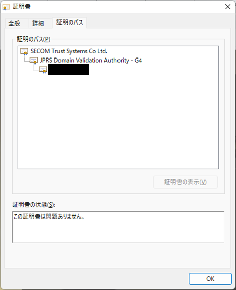
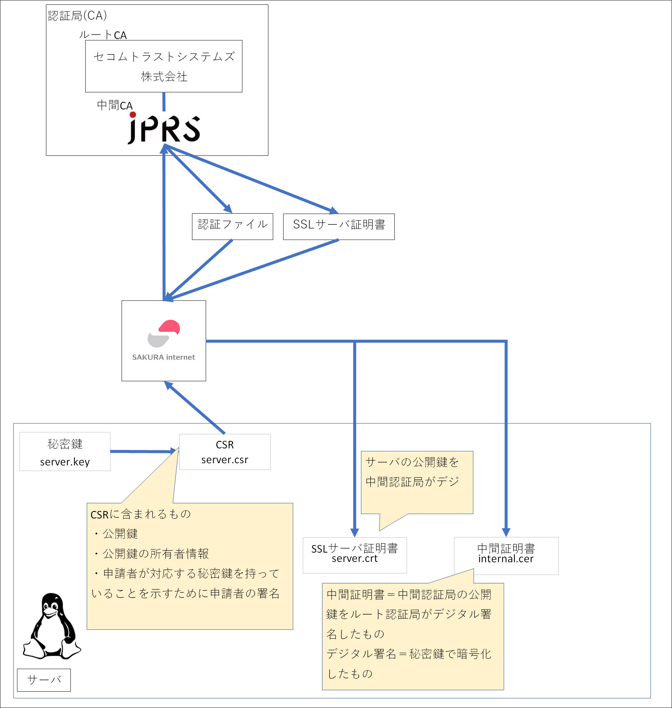
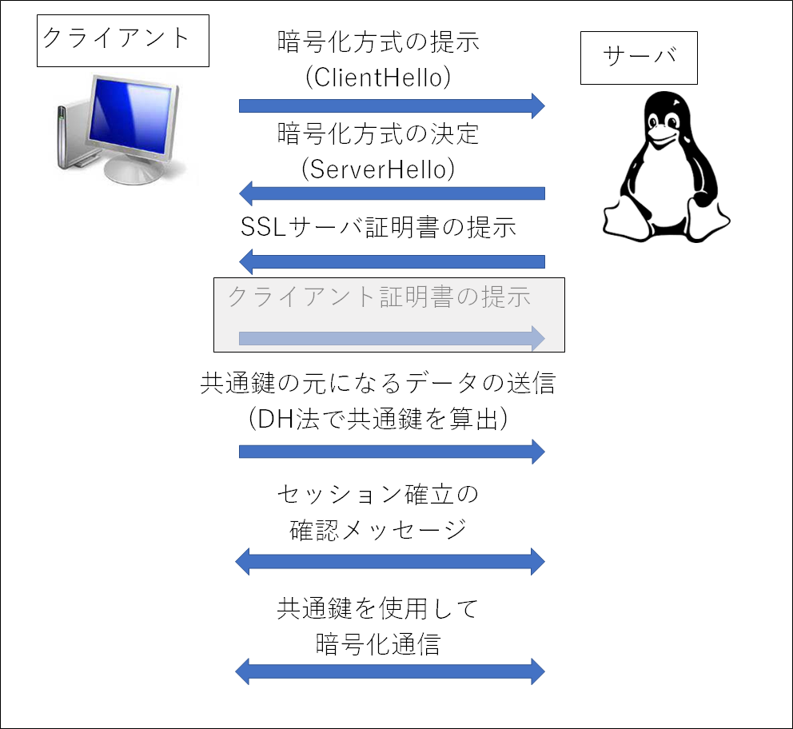

https化（常時SSL化）
Tweetホーム > 個人開発したことまとめ > https化
https化（常時SSL化）
SSL通信回りの仕組みがよくわかっていなかったので、自分のWebサイトを https 化することで勉強になるかなと思ったのでやってみた。
やったこと
以下のサイトの手順に従って SSL証明書を導入し、 https 化してみた。
さくらVPSにSSL証明書を導入しHTTPS通信の構築
ぶつかった壁とか学んだこととか
①https 化の設定完了後、httpd を再起動したらエラー
httpd[19419]: AH00548: NameVirtualHost has no effect and will be removed in the next release /etc/httpd/conf.d/vhost.conf:4
httpd[19419]: AH00526: Syntax error on line 9 of /etc/httpd/conf.d/vhost.conf:
httpd[19419]: Invalid command 'SSLMutex', perhaps misspelled or defined by a module not included in the server configuration
systemd[1]: httpd.service: main process exited, code=exited, status=1/FAILURE
kill[19421]: kill: cannot find process ""
systemd[1]: httpd.service: control process exited, code=exited status=1
systemd[1]: Failed to start The Apache HTTP Server.
systemd[1]: Unit httpd.service entered failed state.
systemd[1]: httpd.service failed.
上記の赤字部分について調べてみた。Apache2.4.x SSLMutexが廃止されたらしい。「/etc/httpd/conf.d/vhost.conf」の「SSLMutex default」をコメントアウトして「Mutex default ssl-cache」に修正。
修正したら事象は解消したものの、次は以下のエラーが発生。
httpd[20113]: (98)Address already in use: AH00072: make_sock: could not bind to address 0.0.0.0:443
httpd[20113]: no listening sockets available, shutting down
httpd[20113]: AH00015: Unable to open logs
systemd[1]: httpd.service: main process exited, code=exited, status=1/FAILURE
kill[20115]: kill: cannot find process ""
systemd[1]: httpd.service: control process exited, code=exited status=1
systemd[1]: Failed to start The Apache HTTP Server.
systemd[1]: Unit httpd.service entered failed state.
systemd[1]: httpd.service failed.
エラーは二つ。
- AH00072: make_sock: could not bind to address 0.0.0.0:443
- AH00015: Unable to open logs
ログは置いておいて１つ目の方の対処
443 portを複数プロセスがlistenしていると起きる事象。
「ssl.conf」 という、apacheをインストール後に最初から入っていたファイルに「Listen 443 https」とある。また、参考にしていた記事の内容をちゃんと理解せずにそのまま鵜呑みにして作成した「vhost.conf」というファイルにも「Listen 443」という記述があった。この二つのファイルは httpd.conf を経由して読み込まれている。
この二つがバッティングしているのはわかるのだが、そもそもvhost.confを何のために作成したのかわかってなかったのでそれについて調べてみた。
②ApacheのVirtualHost
vhost.conf は Apache の VirtualHost のためのファイル。VirtualHost とは、1台のサーバーで複数のドメインを管理する技術だということが分かった（参考）。
そんなことがしたいわけではないので vhost.conf を削除したところ、事象は解消した。
③key, crt, cer？
https化（常時SSL化）するにあたり、 ssl.conf に以下を記載した。https化する際に生成したファイルのパスを記載しているのだが、各ファイルの役割がよくわかっていなかったので、https化した際の手順を改めて追ってみた。
SSLCertificateKeyFile /etc/httpd/conf/ssl.key/server.key
SSLCertificateChainFile /etc/httpd/conf/ssl.crt/internal.cer
ServerName xxxxxx.xxx:ppp
ServerNameはこちらが参考になると思います。
server.key
まず server.key ですが、これは 以下のコマンドで生成した秘密鍵です。
この秘密鍵からCSRというものを生成し、CSRを認証局(CA)に提示することでSSLサーバ証明書を発行してもらいます。
以下、CSRが何者なのかの説明を引用
『CSRとは「Certificate Signing Request」の略で、認証局に対し、SSLサーバ証明書への署名を申請するためのものです。CSR には「公開鍵」とその所有者情報、及び申請者が対応する秘密鍵を持っていることを示すために申請者の署名が記載されています。』
引用終わり。引用元はこちら。
所有者情報は Distinguished Name (DN)と呼ばれたりもします。
CSR生成コマンドは以下
実行すると以下のように、パスフレーズや公開鍵の所有者情報の入力を求められます。
You are about to be asked to enter information that will be incorporated
into your certificate request.
What you are about to enter is what is called a Distinguished Name or a DN.
There are quite a few fields but you can leave some blank
For some fields there will be a default value,
If you enter '.', the field will be left blank.
-----
Country Name (2 letter code) [XX]:JP
State or Province Name (full name) []:Tokyo
Locality Name (eg, city) [Default City]:XXXXXX-ku
Organization Name (eg, company) [Default Company Ltd]:xxxxxx
Organizational Unit Name (eg, section) []:
Common Name (eg, your name or your server's hostname) []:xxxxxx.xxx（自分のhostnameを入力）
Email Address []:xxxxxx@yyyy
Please enter the following 'extra' attributes
to be sent with your certificate request
A challenge password []:
An optional company name []:
これでserver.csrが生成される。これを使って、リンク先でSSL証明書を申し込む。特にこだわりはないので一番安いやつにした。リンク先を見るとドメイン認証型という単語があるが、これについては以下のサイトがわかりやすいと思います。
申し込んだ後、暫くするとSSL証明書の利用開始までの手順が記載されたメールが届く。
さらに暫くすると認証ファイルのアップロードのお願いメールが届く。認証ファイルは、対象のサーバーが存在するか（厳密にはドメインが存在するか）を認証局が確認するためのものです。
⇒認証ファイルのアップロードの手順：ファイル認証の手続きをしたい
管理画面から認証ファイル( xxx.txt )をダウンロードして、自分のサーバの所定のフォルダに認証ファイルを配置します。
「/var/www/html/」は DocumentRoot で、apacheのデフォルトはここです。httpd.conf に記載されています。
http://example.com/.well-known/pki-validation/xxx.txt にアクセスして認証ファイルが見れることを確認したら暫く待ちます。
server.crt, internal.cer
無事認証されたら「SSLサーバ証明書発行のお知らせ」というメールが届きます。SSLサーバ証明書とは、サーバの公開鍵を中間認証局が署名したものです。中間認証局自身が所有している中間証明書の秘密鍵でSSLサーバ証明書（以下、サーバ証明書）に署名することで、サーバ証明書の信頼性を担保しています。サーバが存在するかを確認するため、メールが届くまでには数分、時間がかかります。私の場合は30分ぐらいでした。メールが来るとサーバ証明書(server.crt)と中間証明書(internal.cer)がダウンロードできるようになります。
サーバにサーバー証明書(server.crt)と中間証明書(internal.cer)を配置します。今回は以下のディレクトリに配置しています。
/etc/httpd/conf/ssl.crt/server.crt
ssl.conf に SSLCertificateFile, SSLCertificateKeyFile, SSLCertificateChainFile と ServerName を設定します。
SSLCertificateKeyFile /etc/httpd/conf/ssl.key/server.key
SSLCertificateChainFile /etc/httpd/conf/ssl.crt/internal.cer
ServerName xxxxxx.xxx:ppp
httpdを再起動すれば設定完了。
設定が正しく行われていれば、ブラウザの鍵マークからキーチェーンを確認できます。図の SECOM Trust System Co Ltd. が、ルート認証局（ルートCA）。JPRS Domain Validation Authority - G4 が中間認証局（中間CA）で、今回私がSSL証明書の発行を依頼したところ。一番下の黒く塗りつぶしたところには、自分のドメインが記載されています。

ここまでの申請の流れを図にしたものが以下の図です。ルートCAは中間CAの正当性を担保するための機関です。

参考
中間証明
- 中間CA 【intermediate certificate authority】 中間認証局
- 中間証明書
- 中間証明書とは？SSL中間CA証明書の必要性やエラー・確認方法を紹介
- サーバー証明書／中間CA証明書／ルート証明書の違いとは？
- SSL証明書のルート認証局・中間認証局 とは？
- 申込時に用意しなくてはいけないCSRファイルとは何でしょうか？
- [CertCentral]CSR生成について
- ディスティングイッシュネームとは何ですか
- CSRについて教えてください
- SSL証明書のKEYファイル・CSRファイル・CRTファイルのチェック方法
- CSRを作成したい
④SSL通信のシーケンスとサーバ証明書の用途
上記のサーバ証明書を使ってSSL通信が実現されている。ブラウザから https でサーバにアクセスする際のシーケンスは以下の図のようになっています。

暗号化の方式を決定した後、サーバからクライアントに対してSSLサーバ証明書を提示します。クライアントは提示されたSSLサーバ証明書を検証します。検証にはルート認証局が発行する「ルート証明書」が必要です。ルート証明書はパソコンやスマートフォンなどの端末内に保存されているため、これを使って検証します。サーバーから送られてくる証明書が、ルート証明書に関連付けられた証明書（正規の中間認証局が発行した証明書）であるかを検証します。
クライアント認証はオプションです。私の環境では、 ssl.conf は以下の通りコメントアウトされているので、設定を変えない限りクライアント認証は実施されません。
# Client certificate verification type and depth. Types are
# none, optional, require and optional_no_ca. Depth is a
# number which specifies how deeply to verify the certificate
# issuer chain before deciding the certificate is not valid.
#SSLVerifyClient require
#SSLVerifyDepth 10
「共通鍵の元になるデータの送信」は、共通鍵を生成するためのもの。共通鍵そのものを送るのではなく、共通鍵を生成するための元ネタを送ることで鍵漏洩のリスクを軽減するためのもので、 DH（Diffie-Hellman）法というやり方で共通鍵を生成する。DH法のアルゴリズム自体はややこしいので省略するが、ざっくり言うと、クライアントとサーバがそれぞれ生成した別々の乱数をお互いに送り、それをもとに共通の値を生成する技術です。DH法で生成した値を共通鍵暗号方式の鍵として使用します。
このようにして算出した共通鍵を使用して、暗号化通信が行われます。
参考
デジタル署名
- デジタル署名とは？仕組みからわかりやすく解説
- SSL を理解するための基礎ネゴシエーション
- 認証局（CA）の役割 ～PKI基礎②～
- 証明書チェーンとは
- サーバー証明書／中間CA証明書／ルート証明書の違いとは？
クライアント認証
デジタル署名
- 2.4 デジタル署名
- 電子署名とデジタル署名の違いとは？仕組みや役割など詳しく解説！
- 中間証明書とは？SSL中間CA証明書の必要性やエラー・確認方法を紹介
- 【比較8選】SSL証明書の選び方とおすすめ証明書を徹底解説！
- SSLサーバ証明書の種類
- 公開鍵暗号
- SSLサーバ証明書とは
- RSA鍵、証明書のファイルフォーマットについて
- 【図解】クライアント証明書(https,eap-tls)の仕組み ~シーケンス,クライアント認証,メリット~
- 【図解】https(SSL/TLS)の仕組みとシーケンス,パケット構造 〜暗号化の範囲, Encrypted Alert, ヘッダやレイヤについて～
- Apache|秘密鍵や公開鍵を生成しHTTPSを有効化
- 【図解】公開鍵・秘密鍵の仕組みを分かりやすく ～公開鍵暗号方式の身近で具体的な利用例やメリット～
- 第2回 HTTPSの詳細
- SSL証明書のファイル形式と作成方法まとめ
- RSA鍵、証明書のファイルフォーマットについて
- 【用語明解】証明書の申請で登場する各種ファイルの見分け方
- RSA における拡張子の違い | PEM, CRT, CER, CERT, KEY, DER, CSR
- Apache confファイルと証明書インストール
- SSLって何？意味や仕組みをわかりやすく解説！
⑤httpdを再起動するとエラー
「service httpd restart」 で httpd を再起動すると、以下のエラーが発生。
httpd[20545]: Server xxxxxx.xxx:ppp (RSA)
httpd[20545]: Enter pass phrase:Apache:mod_ssl:Error: Private key not found.
httpd[20545]: **Stopped
systemd[1]: httpd.service: main process exited, code=exited, status=1/FAILURE
kill[20547]: kill: cannot find process ""
systemd[1]: httpd.service: control process exited, code=exited status=1
systemd[1]: Failed to start The Apache HTTP Server.
systemd[1]: Unit httpd.service entered failed state.
systemd[1]: httpd.service failed.
秘密鍵を生成する際、パスフレーズの入力が必要となるようにしたが、パスフレーズを入力するタイミングすらなくエラーが発生する。
以下のコマンドで、 server.key のパスフレーズを解除してみる（参考）。
その後、再度 httpd を再起動すると正常に立ち上がるようになった。
⑥url打ってアクセスするとタイムアウトでエラー
ブラウザから url を https にしてアクセスしたが、以下の画面が出てきてアクセスできない

firewallの設定を確認すると、以下のようになっていた。services に https がないことがわかる。
target: default
icmp-block-inversion: no
interfaces: eth0
sources:
services: dhcpv6-client http ssh
ports: 8009/tcp 8009/udp
protocols:
masquerade: no
forward-ports:
source-ports:
icmp-blocks:
rich rules:
以下のコマンドで、 service に https を追加。
※ permanent オプションはCentOSを再起動しても設定を残すためのオプション
再度 firewall の設定を確認。まだ https 追加されていない。
target: default
icmp-block-inversion: no
interfaces: eth0
sources:
services: dhcpv6-client http ssh
ports: 8009/tcp 8009/udp
protocols:
masquerade: no
forward-ports:
source-ports:
icmp-blocks:
rich rules:
firewall を再起動して、再度 firewall の設定を確認。
target: default
icmp-block-inversion: no
interfaces: eth0
sources:
services: dhcpv6-client http https ssh
ports: 8009/tcp 8009/udp
protocols:
masquerade: no
forward-ports:
source-ports:
icmp-blocks:
rich rules:
https が追加されたので再度画面表示したら動いた。
参考